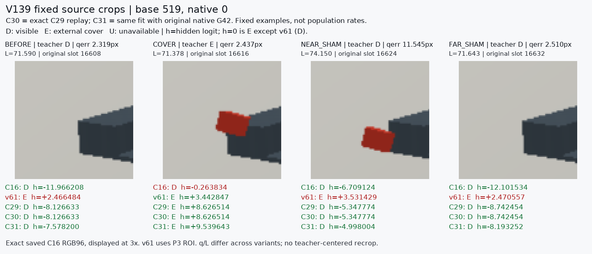
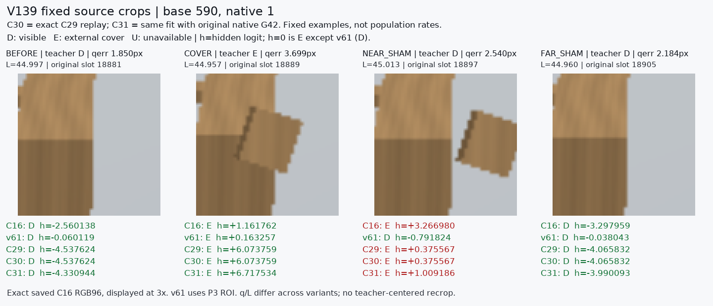

Two previously fixed base/slot groups. Original saved C16 RGB96 pixels; no recrop, model execution, or new case selection. v61 logits shown with sign reversed to hidden logit. These examples do not measure prevalence or private-data transfer.


C30 and C31 source eligibility: {"C30_BROAD_SOURCE_ZERO_GEOMETRY_CONTROL": false, "C31_BROAD_SOURCE_NATIVE_G42": false}. Selected source arm: None.